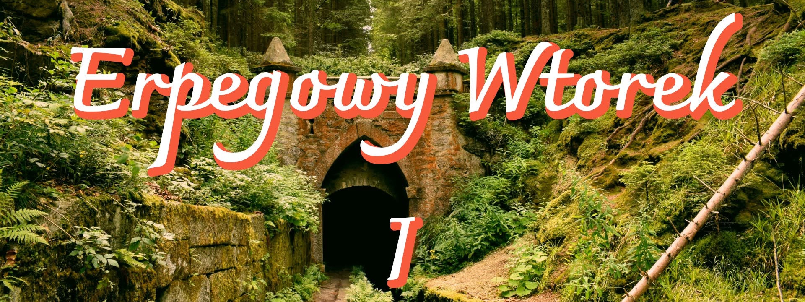

Nowe wydarzenie na erpegowej scenie Wrocławia
RPG bez zapisów
Spotykamy się, żeby pograć w RPG, pogadać i poznać innych erpegowców z Wrocławia. Przychodzisz i grasz.
Od 18:00 zbieramy się na luźną rozmowę - to dobry moment, żeby kogoś poznać, znaleźć graczy albo po prostu pogadać o erpegach.
O 19:00 startują krótkie sesje. Każdy, kto chce coś poprowadzić, w minutę mówi, co to za gra i ilu graczy szuka, a reszta dosiada się do stołów, które ich zainteresowały. Gramy mniej więcej do 21:00, ale jeżeli macie ochotę na dłuższą grę, możecie zostać 🙂
Masz grę, którą chcesz poprowadzić? Przynieś ją.
To idealne miejsce, żeby przetestować swój system, poprowadzić one-shota albo pokazać coś małego i dziwnego, czego nie warto ogłaszać z tygodniowym wyprzedzeniem. Nie musisz się zapisywać ani nikogo uprzedzać - wystarczy, że przyjdziesz przygotowany i powiesz o tym o 19:00. Nie masz nic gotowego? Też dobrze - przychodzisz i grasz u kogoś.
Nowe osoby mile widziane, nie trzeba nikogo znać ani mieć doświadczenia. Zagadaj do nas na wejściu, pokażemy, o co chodzi.
Lokal użycza nam miejsca za darmo, więc każdy zamawia u nich w ciągu wieczoru coś do picia lub jedzenia. Dzięki temu mamy gdzie grać.
Kontakt
Dopiero się rozkręcamy, więc lista kanałów kontaktu będzie rosła. Na teraz najprościej napisać wiadomość i krótko opisać, czy chodzi o dołączenie, sesję, planszówki czy współpracę.